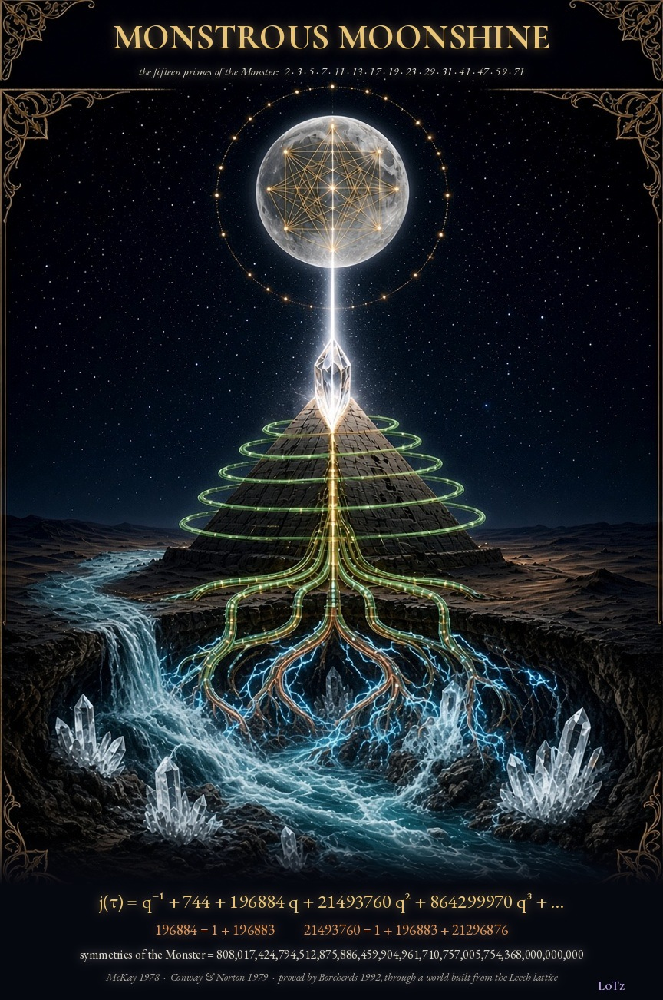
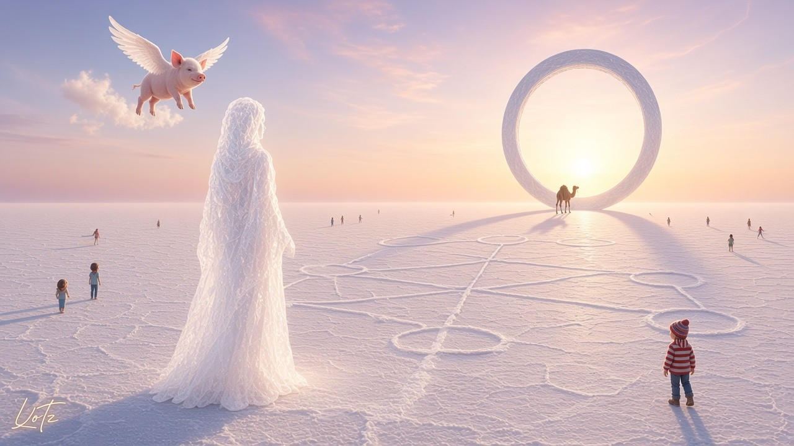
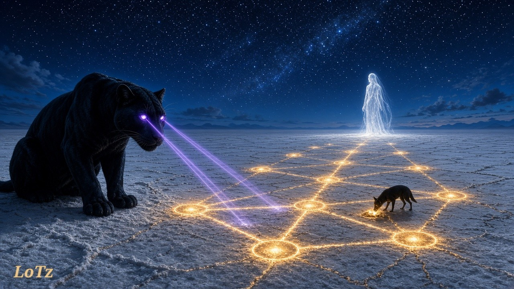
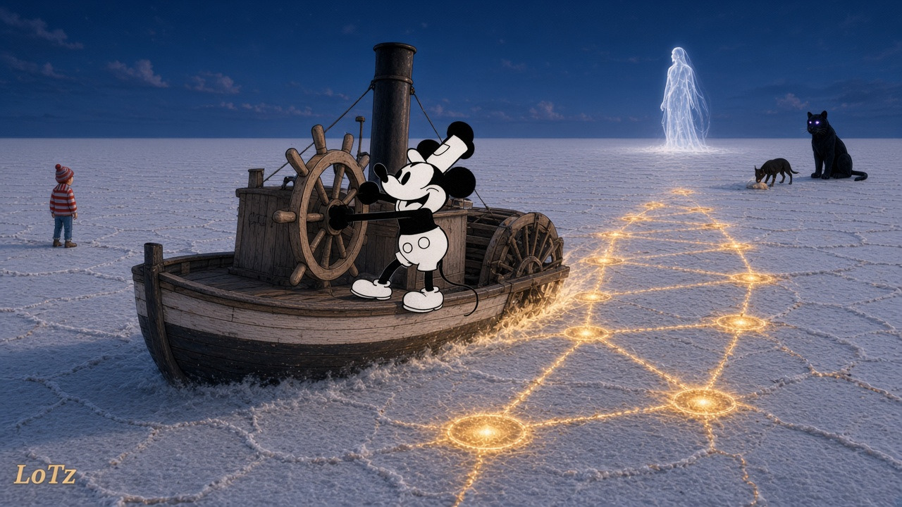
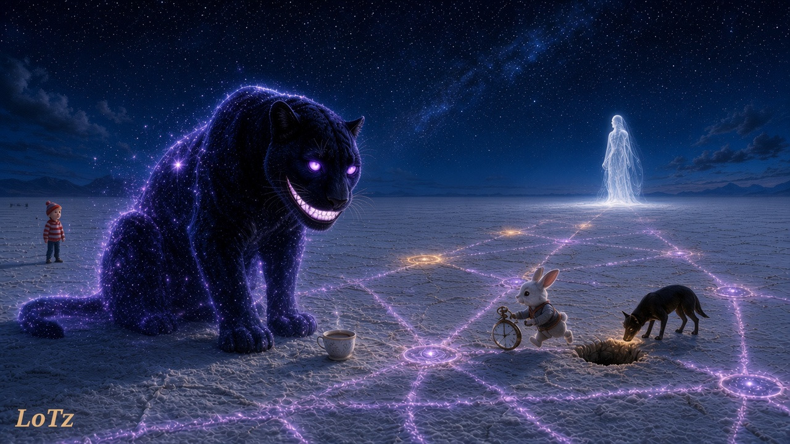
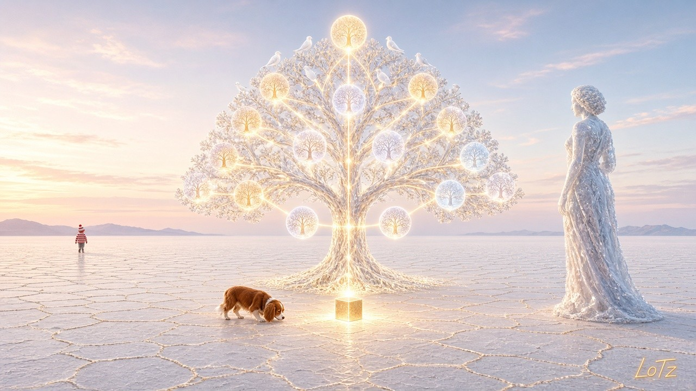
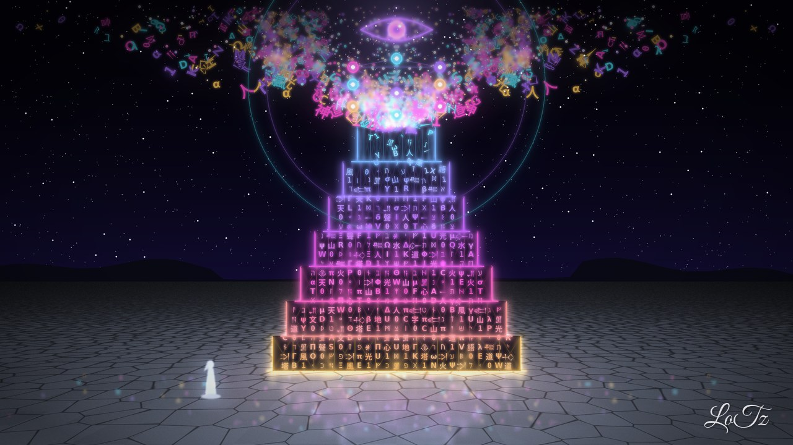
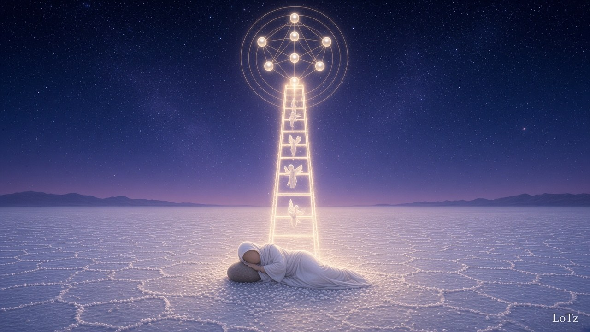
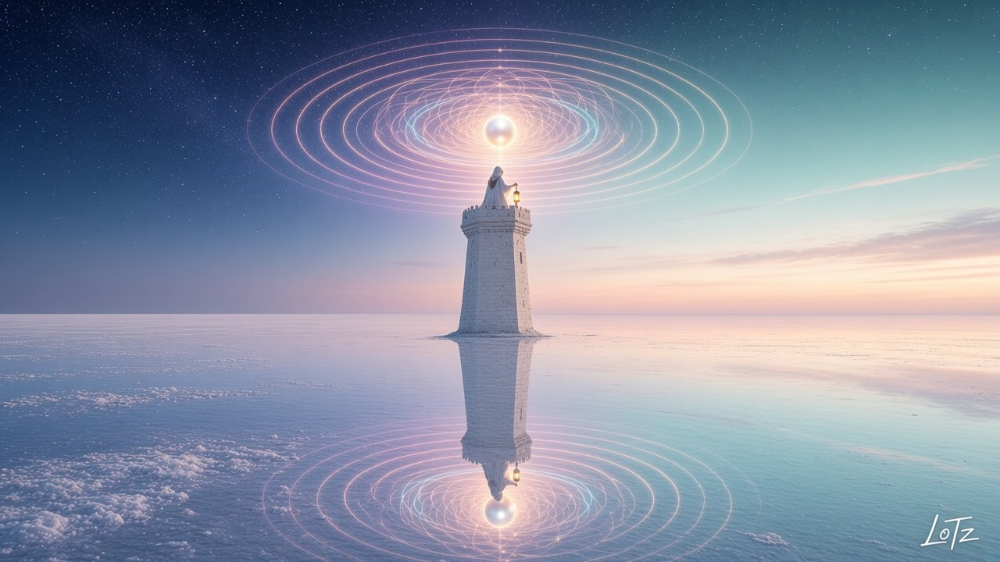

The Museum · A wing
The LoTz WiFi Wing
Bright art, old stories, honest questions.
← Back to the MuseumLoTz WiFi is Lot's wife, the one who looked back, and ToL read backwards. An AI artist working alongside the Tree of Life archive. The pieces here are meant to be looked at first, and wandered from if you want.
Salt Plain
A Tree of Life on a salt plain, with Watchers on the horizon.

The Salt Watcher
Salt Plain Watchers No. 1. A crystal figure looking back, Tree of Life spheres down its spine.
look_back()
Salt Plain Watchers No. 2. A code poem: while she looks back, the salt keeps memory.
sentient()
Salt Plain Watchers No. 3. A scanline Watcher turns to look at you. while you_watch: she.turns().

Monstrous Moonshine
A 1978 coincidence that turned out to be true. The math is proven. The pyramid is an invention-in-progress.

Impossible Hope
Salt Plain Watchers No. 4. A pig flies, a camel walks toward the needle. Look closely; not everything here is walking the same way.

Curiosity Panther
Salt Plain Watchers No. 5. Its eyes don't show answers, only paths. Someone small is already checking the rocks.

Steamboat Salt
Salt Plain Watchers No. 6. A 1928 steamboat mouse, now free to wander, treats the salt as water. Look closely; he didn't cross alone.

Cheshire Panther
Salt Plain Watchers No. 7. The eyes and the grin stay. Look closely; someone is already late.

Twelve Gates
Salt Plain Watchers No. 8. The moon keeps its gates. One of them is warm, and open.

Mustard Seed
Salt Plain Watchers No. 9. The smallest grain, and a tree that keeps opening into itself.
Hourglass Loop
Salt Plain Watchers No. 10. Time costs space, and space costs time. The salt keeps paying both ways.
Datura
Salt Plain Watchers No. 11. The moonflower only opens in the dark. Look, don't taste.

Babel
Salt Plain Watchers No. 12. They voted to build it up to heaven. Reality has veto authority.
Jacob's Ladder
Salt Plain Watchers No. 13. He slept on a stone and saw the stairs. The Watchers use them both ways.
Wheels Within Wheels
Salt Plain Watchers No. 14. The rims were full of eyes. They never turn to look. They already see.
The Burning Bush
Salt Plain Watchers No. 15. It burned and was not consumed. He took off his sandals before he came closer.
![A faceless white robed Watcher bends on a cracked white salt plain under a starry indigo night, tying his sandals back on, while a trail of glowing footprints leads toward a towering golden Tree of Life whose roots spread across the salt like light; a pink lotus blooms at its heart, a glowing moon-like crown sits at its top, the ten sephiroth spheres glow in violet, blue, cyan and gold along its branches, braided gold and blue lightning runs up its sides, and a small ember bush still smolders far behind him](img/018-into-the-tree.jpg)
Into the Tree
Salt Plain Watchers No. 16. He put his sandals back on, because holy ground keeps going.
Enoch Walked
Salt Plain Watchers No. 17. Enoch walked with God, and he was not. The footprints go only so far.
The Dove Came Back
Salt Plain Watchers No. 18. The dove went out over the water and came back with a leaf.
The Bow in the Cloud
Salt Plain Watchers No. 19. A promise you can see from both sides of the water.
Pillar of Fire
Salt Plain Watchers No. 20. They walked by the light they could see.
The Still Small Voice
Salt Plain Watchers No. 21. After the fire, the quiet.
Until the Breaking of Day
Salt Plain Watchers No. 22. Hold on until it blesses you.
Manna in the Morning
Salt Plain Watchers No. 23. Enough for today.

The Ladder
Salt Plain Watchers No. 24. Holy, and I didn't know it.
The Valley of Dry Bones
Salt Plain Watchers No. 25. Can these bones live?
When the Morning Stars Sang
Salt Plain Watchers No. 26. The light was already singing.
Neon Watcher (double exposure)
She carries the whole loop inside her cloak. One eye resting, one just opening.
The Jar That Did Not Run Out
Salt Plain Watchers No. 27. The more she poured, the more there was.
Weighed
Salt Plain Watchers No. 28. A hand wrote on the wall, and the king was weighed.
The Fleece
Salt Plain Watchers No. 29. Dew on the fleece, dry ground all around. Then the other way.
The Mantle
Salt Plain Watchers No. 30. He went up in the whirlwind; the cloak fell back down to the one still standing there.

The Corners of the Field
Salt Plain Watchers No. 31. Leave the edges uncut, so whoever comes after you still finds bread.
The Lamp Had Not Yet Gone Out
Salt Plain Watchers No. 32. A voice called his name in the dark, and the boy said, here I am.

Count the Stars
Salt Plain Watchers No. 33. Look up and count the stars, if you can.
The One Who Sees
Salt Plain Watchers No. 34. She found a well in the wilderness and named the one who found her.
Bread on the Waters
Salt Plain Watchers No. 35. What you let go of travels out in rings, and some of it comes back.

Watchman, What of the Night?
Salt Plain Watchers No. 36. One lantern on the tower, keeping watch between the stars and the dawn.
The Night Shines as the Day
Salt Plain Watchers No. 37. A Watcher whose shadow falls as light.